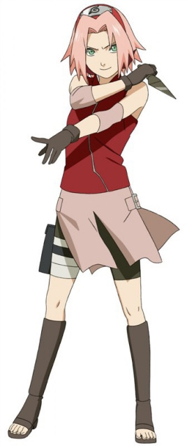

春野樱，日本漫画《火影忍者》及其衍生作品中的女主角。新一代医疗忍者，第五代火影纲手的弟子，与漩涡鸣人、宇智波佐助隶属于旗木卡卡西领导的第七班。 原本性格柔弱任性，在木叶忍者学校笔试成绩不错。在佐助叛离木叶村后，拜第五代火影纲手为师，学会优秀的体术，怪力和医疗忍术。 第四次忍界大战中作为忍者联军第三部队以及医疗后勤部队的一员。 具有良好的查克拉控制能力与清晰的头脑，擅长体术怪力与医疗忍术以及解除幻术（拥有幻术天赋，早期设定是幻术型忍者）。经过自己艰苦卓绝的努力奋斗，最终成长为一个贯彻自己座右铭“勇气”的优秀忍者。 忍界大战结束若干年后，长大后的樱已经成为木叶高层干部的上忍，并与佐助结婚，改名为宇智波樱，佐助与樱育有一女――宇智波佐良娜 。